library(tidyverse)
library(openintro)More on CLT
Warm up
Announcements
- Last day to drop with a W is today!
- Lab 6 and Intro+EDA due tomorrow.
Packages and data
CLT recap and more examples
The Central Limit Theorem says that the distribution of the sample statistic is normal, if certain conditions are met.
Illustration
To see how the central limit theorem works, we will “collect data” from different distributions. We will then calculate a sample mean and we will visualize our the distribution of sample means.
Normal population
Normal population, sample size 10
Let’s start with a normal distribution. Say we are interested in the number of times first year students eat at the dining hall per month. Let’s suppose that we know that the true population distribution of dining hall meals is \(N(\mu= 50,\sigma = 15)\).
Now imagine that each of you conduct your own study in which you randomly select 10 first years and ask them how many times they ate at the dining hall last month. You then calculate the sample mean of the 10 students that you selected.
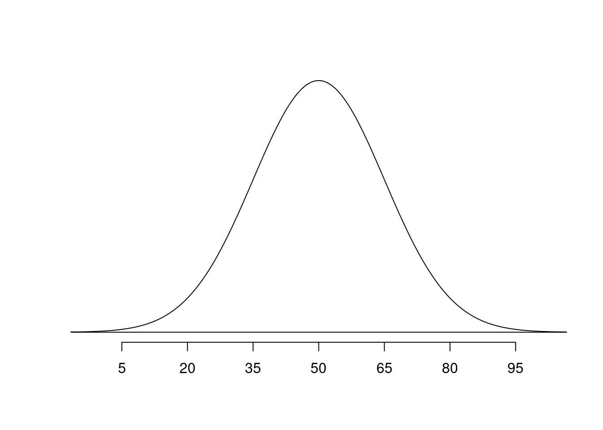
Function rnorm() draws a random sample from a normal distribution.
Sample 1
sim1
39.8758423406625 45.1094526422692 46.6511095305911 48.3089852786868
1 1 1 1
53.2153918856514 54.661538259704 58.2869278312871 59.2818478343895
1 1 1 1
63.7554243426907 67.6094943134405
1 1 [1] 53.6756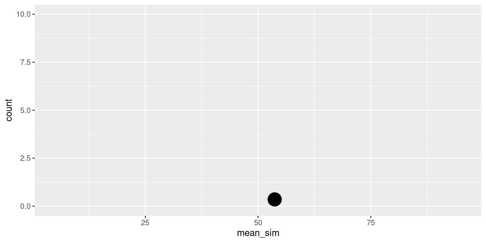
Sample 2
sim2
19.2453827654055 27.997704587548 37.2536788949921 37.7349446618606
1 1 1 1
38.0773334687742 46.4497493209566 47.0999305250375 50.8769824677425
1 1 1 1
57.8967214831046 71.4163331702455
1 1 [1] 43.40488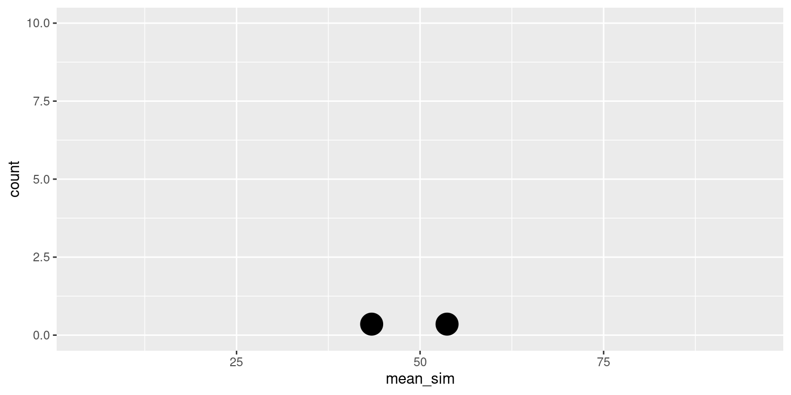
Sample 3
sim3
28.0411736019347 28.844147284922 45.9802918072757 47.5436650108787
1 1 1 1
48.2101983845863 57.0060140902287 57.0085844264827 57.4720334665387
1 1 1 1
60.6278315623456 61.1665373431298
1 1 [1] 49.19005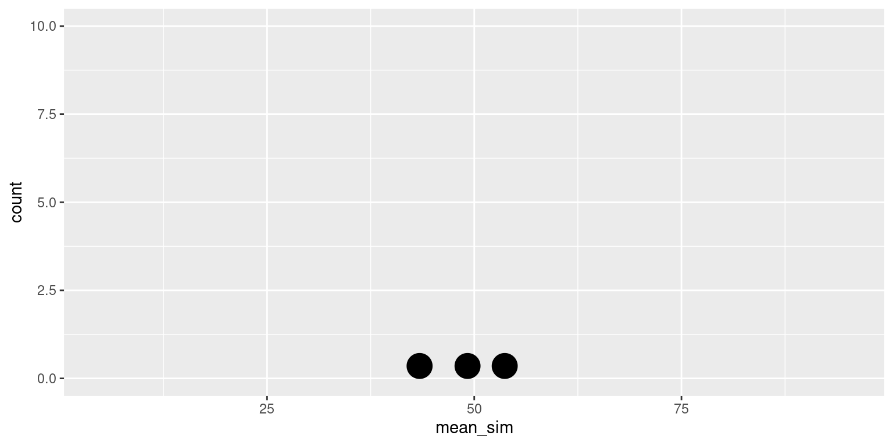
More samples
Let’s repeat this 500 times:
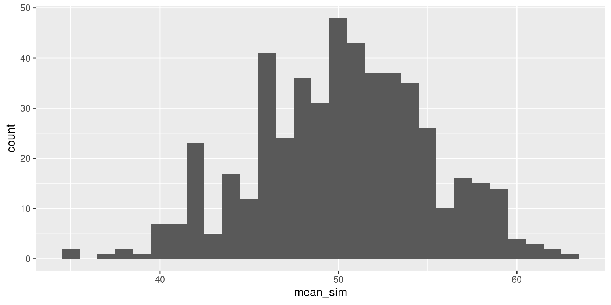
Normal population, sample size 50
Now let’s increase our sample size (\(n\)). Imagine that you each survey 50 students.
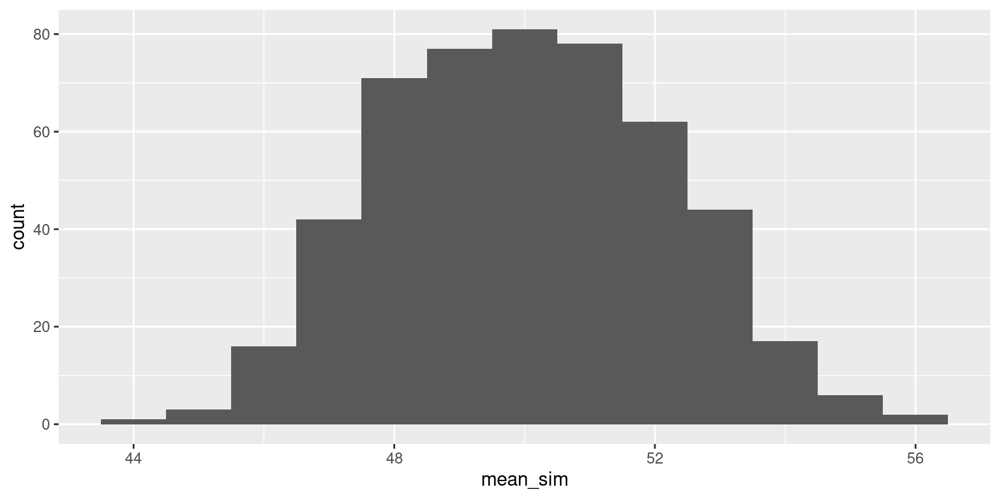
Normal population, sample size 150
Finally, take a sample of size 150. Calculate the sample mean.
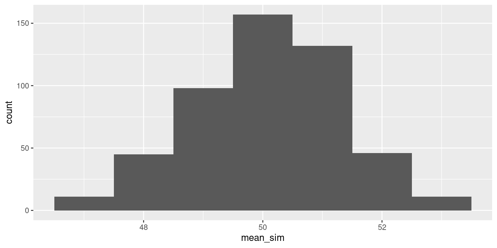
Important
As the sample size increases, the standard deviation of the distribution of the sample mean decreases!
Now let’s compare different population distributions.
Skewed population distribution
Say the population distribution of dining hall meals looks more like this:
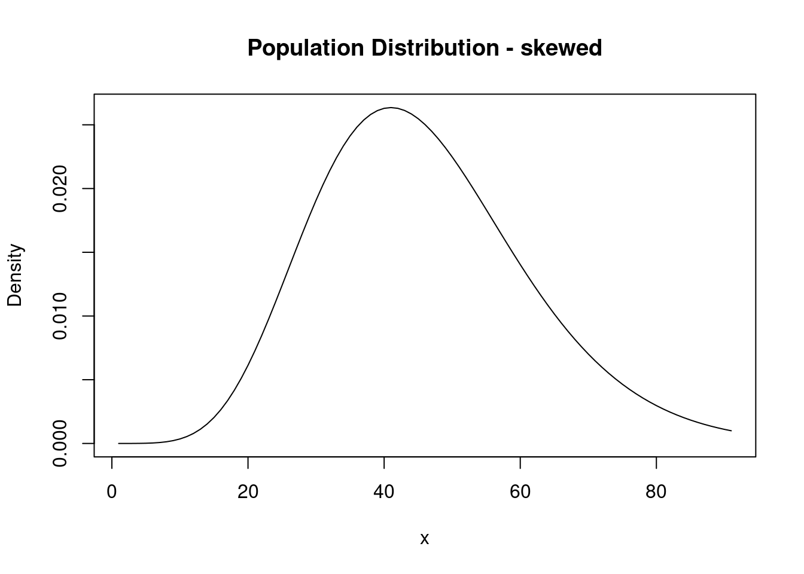
Note, the mean of this distribution is around 50.
Skewed population distribution, sample size 10
We collect a random sample of 10 and calculate the sample mean.
samp
36.0403466760015 36.5318079640983 39.7644136898599 42.6083149724047
1 1 1 1
45.7785338109389 52.4099971702863 53.9656837111663 55.9595445823423
1 1 1 1
57.5148182340717 67.3147816105797
1 1 [1] 48.78882Let’s repeat this 500 times:
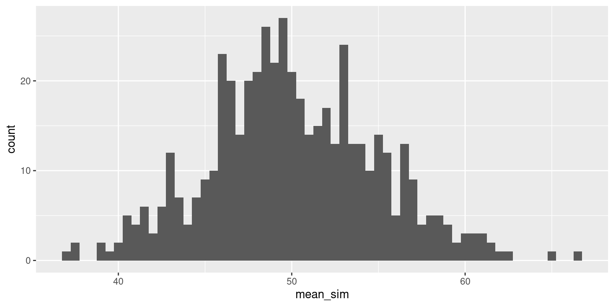
Skewed population, sample size 50
Now let’s increase our sample size (\(n\)). Imagine that you each survey 50 students.
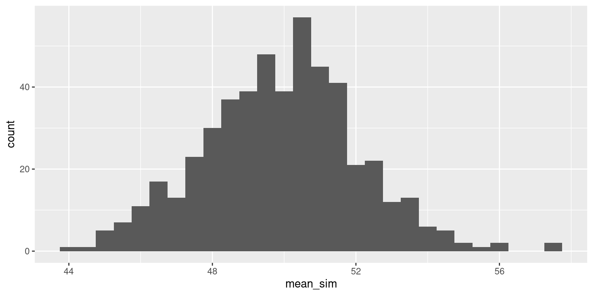
Skewed population, sample size 150
Finally, take a sample of size 150. Calculate the sample mean.
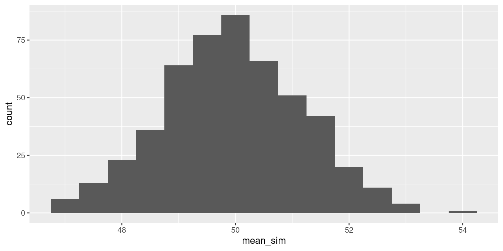
Bimodal population distribution
Now imagine the population distribution is bimodal:
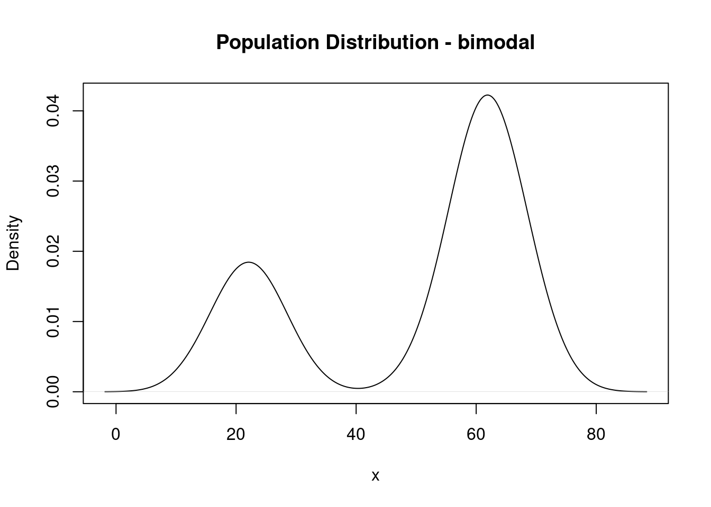
Note: the mean of this distribution is about 50.
Bimodal population distribution, sample size 10
We collect a random sample of 10 and calculate the sample mean.
samp
64.0308396618234
1 [1] 64.03084Let’s repeat this 500 times:
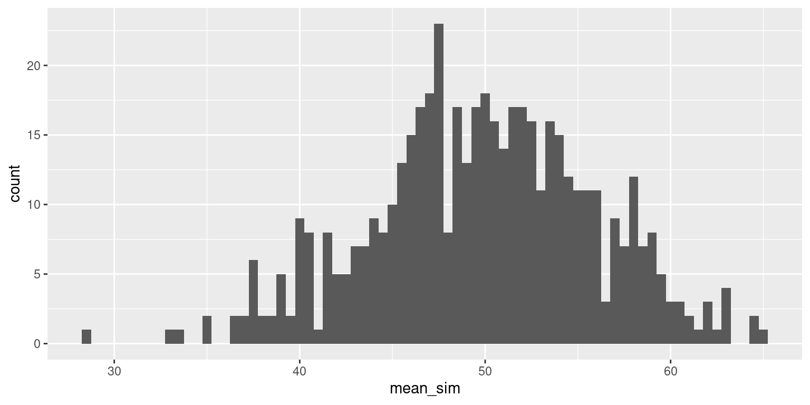
Bimodal population, sample size 50
Now let’s increase our sample size (\(n\)). Imagine that you each survey 50 students.
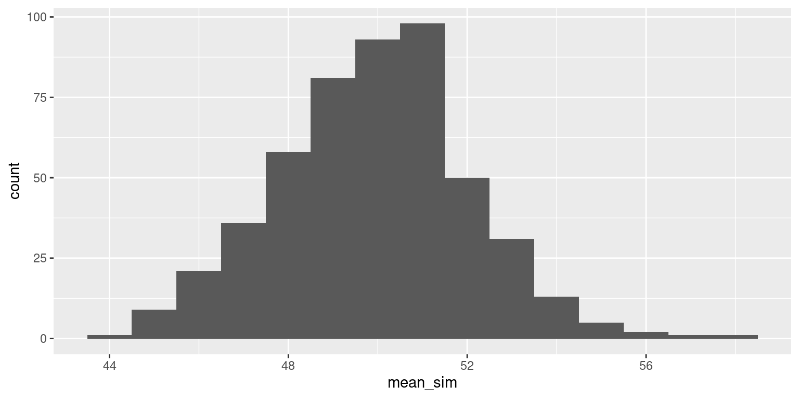
Bimodal population, sample size 150
Finally, take a sample of size 150. Calculate the sample mean.
Decision Errors
In the next two weeks we will learn about how we can use CLT for inference (hypothesis testing and building confidence intervals). Let’s take a step back and talk about hypothesis testing overall.
What could go wrong?
Suppose we test the null hypothesis \(H_0 : \mu = \mu_0\). We could potentially make two types of errors:
| Truth | \(\mu = \mu_0\) | \(\mu \neq \mu_0\) |
|---|---|---|
| Fail to reject \(H_0\) | Correct decision | Type II Error |
| Reject \(H_0\) | Type I Error | Correct decision |
Type I Error: rejecting \(H_0\) when it is actually true (falsely rejection the null hypothesis)
Type II Error: not rejecting \(H_0\) when it is false (falsely failing to reject the null hypothesis)
While we of course want to know if any one study is showing us something real or a Type I or Type II error, hypothesis testing does NOT give us the tools to determine this.
Discernibility level
The discernibility level provides the cutoff for the p-value which will lead to a decision of “reject the null hypothesis.” Choosing a discernibility level for a test is important in many contexts, and the traditional level is 0.05. - If making a Type I error is dangerous or especially costly, we should choose a small discernibility level (e.g., 0.01 or 0.001). - If a Type II error is relatively more dangerous or much more costly than a Type I error, then we should choose a higher discernibility level (e.g., 0.10).
The risk of committing Type I error is equal to \(\alpha\) - pre-defined discernibility level.
Power
Power is the probability of rejecting the null hypothesis when it is false (i.e., of avoiding a Type II error). Power can be also thought of as the likelihood a planned study will detect a deviation from the null hypothesis if one really exists.
Acknowledgements
These notes were adapted from notes by Andrea Lane and Yue Jiang.